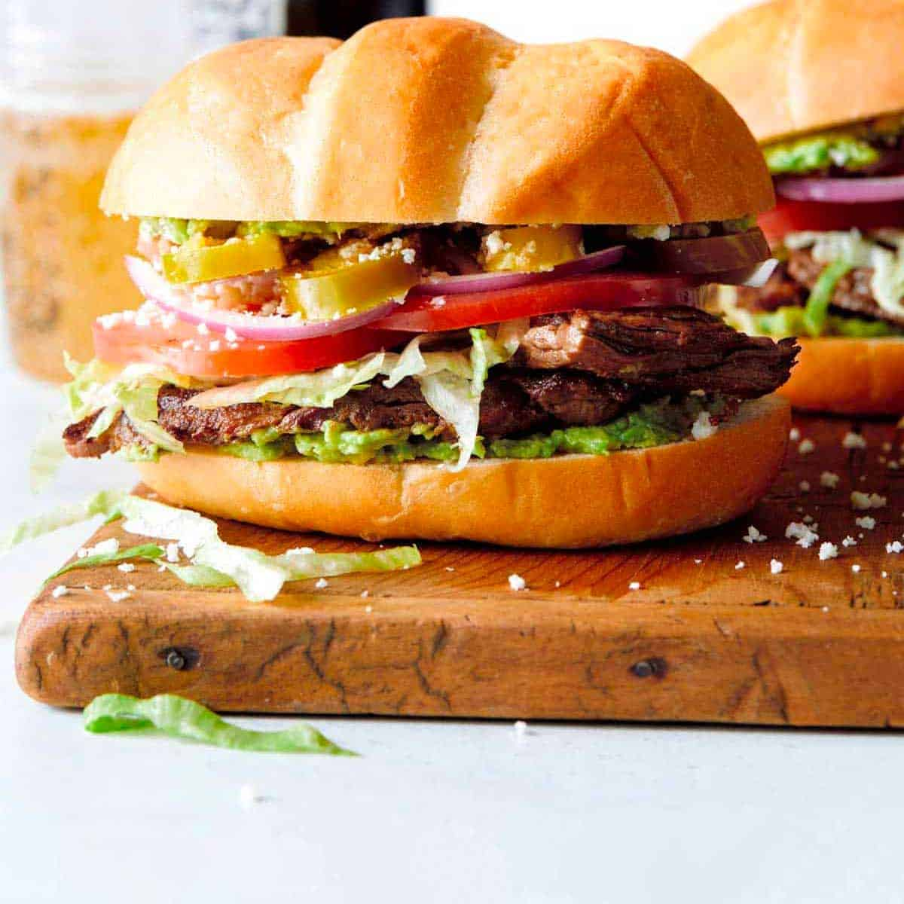

Torta

A torta a delicious mexican dish. consisting of types of meat, vegtables, and cream all inside some type of bread. usually the bread being "telera or bollillo." All together the bread creates a wonderful tasting food.
Ingredients
Bread "Telera or bollillo
Vegetables (tomatoes, lettuce, onions, etc)
Steps
- Sear meat
- Cut meat
- Toast bread
- Cut vegetables
- Assemble after cutting bread
- Add ham
- Add sour cream
- Toast both sides of bread after Assembled